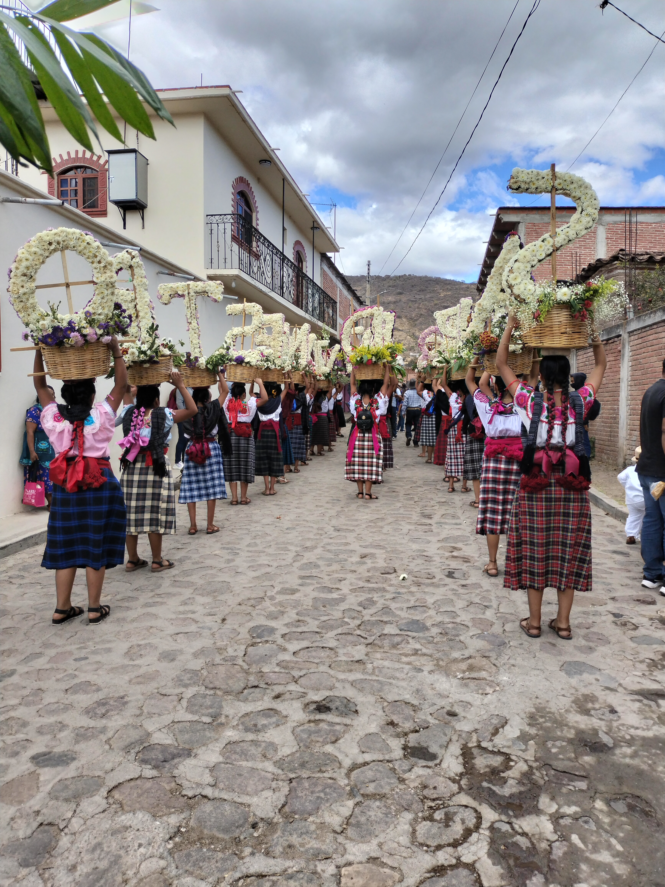
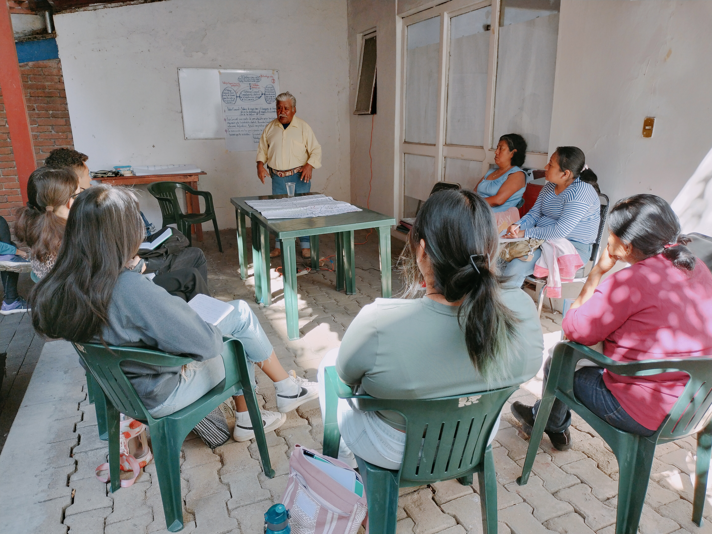
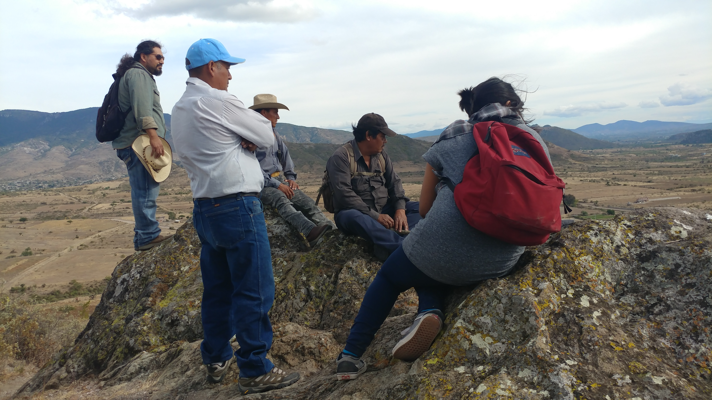
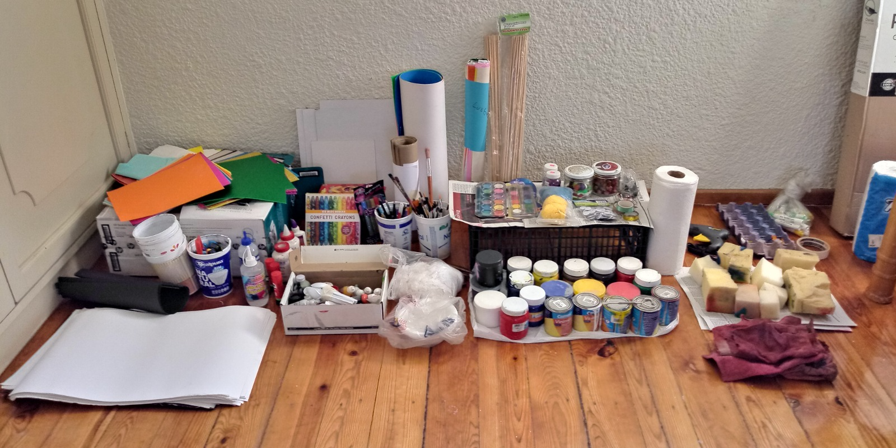
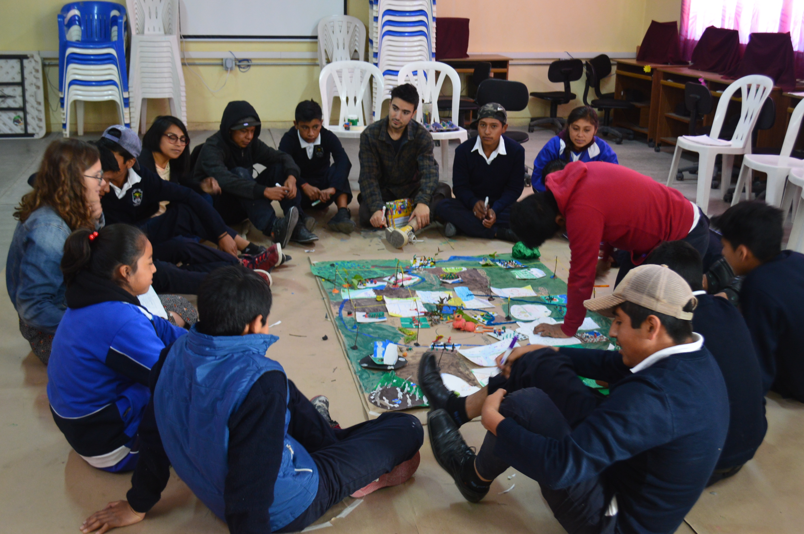

Lectures and field work in communities to examine processes of colonial domination and decolonization.

Field trips to experience community practices of celebration and collective care of the territory.

Exercises in creative self-expression and guidance to design a community workshop in expressive arts.

Each student carries out a service project, providing an expressive arts workshop to children and youth in collaboration with community museums and local schools.